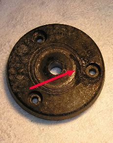
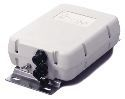

Recovered article. HTML body is from Common Crawl (text only); images came from the Sep 2022 iOS PDF:
Auto-Couplers.pdf ·
5 extracted images & links ·
5 of 5 images merged inline (aspect-ratio matched). Original src preserved on each
<img> as
data-original-src.
Contents: Basics; Efficiencies;
Basics
There seems to be as much confusion about internal couplers as there are external ones. Auto-couplers built into modern transceivers are only good for mismatched loads up to ≈3:1 SWR. Therefore, they're only suitable for extending the bandwidth of a monoband mobile antenna, but even this is a questionable practice. Using one in conjunction with a screwdriver antenna isn't recommended either due to the high RF voltage (see third paragraph). Yet, many mobile operators choose their transceiver make and model just because it has a build in auto-coupler. The Kenwood TS480 SAT vs. TS480 Hx comes to mind.
The confusion extends to external auto-couplers too. The usual justification is to flatten the SWR to near zero, which they don't always do (see below). While this does (slightly) reduce coax losses, there is little thought about the additional losses within the coupler itself. In fact, the losses through the auto-coupler are usually several times more than a 2:1 SWR would cause through coax.

When auto-couplers are used in a mobile environment driving electrically short antennas, the resulting RF output voltage can exceed 10 kV, even when running just 100 watts PEP. This is a concern, because readily-available antenna mounting hardware are not designed to handle this much electromotive stress. For example, standard ballmounts and nylon washers will fail post-haste, especially so if moisture is present. The right photo depicts an old GE Master ballmount insulator. You can see the burned-out groove between the edge of the (removed) ball and one of the mounting bolts. We can get away from this issue by using a base insulator like the Breedlove unit shown at left.

High RF voltage isn't the only concern. Since we're dealing with high reactances, auto-couplers must be mounted as close to the antenna as possible! That is to say, inches, not feet! And, you cannot use coax between the auto-coupler and the antenna, as even one foot piece of coax will reduce the efficiency by 30%! The reason? Coax has about 25 pf of capacitance per foot. The capacitance of a typical HF antenna ranges from 20 pf to about 45 pf depending on its length and frequency of operation. Since our auto-coupled antenna is essentially a base loaded vertical, placing 25 pf to ground will shunt a large portion of the RF to ground. This interaction should not be confused with using shunt reactances to match a low Z HF antennas to a 50 ohm feed. That is a different animal altogether.
The robustness of the RF ground is also a major consideration. Classic examples of poor RF grounding are when the coupler cannot find a match, and/or is resetting itself during transmissions. One inch braid may work if the ground lead is short (less than six inches or so). It is important to remember that the ground side impedance must be lower than the radiating element side.
 Auto-couplers are decade-switched LC networks, so they have a design limitation; they cannot adequately match loads close to the feed line's impedance (near 50 ohms resistive). For example, if the radiator the auto-coupler is feeding, represents a 1/4 wave vertical at the operating frequency, it may not be able to present a low impedance to the transceiver in question. At what reactance point this occurs, is difficult to measure or calculate. However, the typical scenario is that the coupler appears to tune properly at low power, but once full power is used the coupler attempts to retune. If this occurs in your installation, knowing the problem exists is half the cure.
Auto-couplers are decade-switched LC networks, so they have a design limitation; they cannot adequately match loads close to the feed line's impedance (near 50 ohms resistive). For example, if the radiator the auto-coupler is feeding, represents a 1/4 wave vertical at the operating frequency, it may not be able to present a low impedance to the transceiver in question. At what reactance point this occurs, is difficult to measure or calculate. However, the typical scenario is that the coupler appears to tune properly at low power, but once full power is used the coupler attempts to retune. If this occurs in your installation, knowing the problem exists is half the cure.
The most popular auto-couplers for driving an unloaded whip are the Icom AH-4 (shown above right), the Yaesu FT-40, the Alinco EDX-2, and the various MFJ models. Internally, the switching arrangement is almost identical.
It should be noted that the line of auto-couplers manufactured by LDG Electronics are not single-ended, as they are made to match coax-fed loads. While suitable for extending the bandwidth of a monoband antenna, they do not have the matching range the aforementioned, single-ended coupler have. There is a 4:1 balun available intended to extend the matching range, but the losses through this single core ratio balun are very high.
☜Return☜
Efficiencies
 The efficiency of an auto-coupler/whip combination isn't all it could be. They are after all, roughly equivalent to a base-loaded antenna. However, there are ways to increase their efficiency. Obviously, increasing the overall length by using a mast could be done, but there are height limitations to be considered. A good alternative is a cap hat, but this raises other concerns.
The efficiency of an auto-coupler/whip combination isn't all it could be. They are after all, roughly equivalent to a base-loaded antenna. However, there are ways to increase their efficiency. Obviously, increasing the overall length by using a mast could be done, but there are height limitations to be considered. A good alternative is a cap hat, but this raises other concerns.
In order to be effective, the cap hat must be mounted at the very top of the antenna. This is difficult to do when using a whip make from 17-7 stainless steel—they're just too flexible! Therefore, a solid mast is the only answer. Aluminum rod is fairly inexpensive, and available from Commerce Metals, Speedy Metals, Metals Depot, and similar suppliers. It requires drilling and tapping, but any good metal shop can do that for you.
A good rod size to shoot for is 5 feet in length, and 5/8" OD. Add a 5 foot cap hat as shown in the photo at right (described in the cap hat article), and the electrically equivalent length will be nearly 12 feet! However, there is one more consideration, and that is a stout mounting arrangement. How this is accomplished would be reliant on a lot of variables—the vehicle, and the mounting position to name two. These issues, however, should be weighed against more than doubling the overall efficiency!
☜Return☜
Home
 Auto-couplers are decade-switched LC networks, so they have a design limitation; they cannot adequately match loads close to the feed line's impedance (near 50 ohms resistive). For example, if the radiator the auto-coupler is feeding, represents a 1/4 wave vertical at the operating frequency, it may not be able to present a low impedance to the transceiver in question. At what reactance point this occurs, is difficult to measure or calculate. However, the typical scenario is that the coupler appears to tune properly at low power, but once full power is used the coupler attempts to retune. If this occurs in your installation, knowing the problem exists is half the cure.
Auto-couplers are decade-switched LC networks, so they have a design limitation; they cannot adequately match loads close to the feed line's impedance (near 50 ohms resistive). For example, if the radiator the auto-coupler is feeding, represents a 1/4 wave vertical at the operating frequency, it may not be able to present a low impedance to the transceiver in question. At what reactance point this occurs, is difficult to measure or calculate. However, the typical scenario is that the coupler appears to tune properly at low power, but once full power is used the coupler attempts to retune. If this occurs in your installation, knowing the problem exists is half the cure.
{kind=link}
{kind=link}